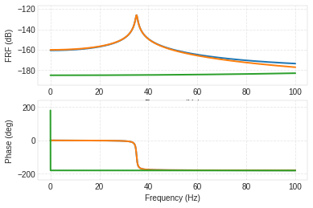

Lab 2: Frequency Domain Identification Techniques¶
In [60]:
%load_ext autoreload
%autoreload 2
import vibration_toolbox as vtb
from vibration_toolbox import sdof_cf
import matplotlib.pyplot as plt
import numpy as np
import scipy.io as sio
import math as math
import scipy.linalg as la
The autoreload extension is already loaded. To reload it, use:
%reload_ext autoreload
Beam Properties¶
In [61]:
l=21.75*0.0254;# length in meters
h=0.5*0.0254;# height in meters
w=1*0.0254;# width in meters
A=w*h;
rho=2700;# density in kg/cubicmeter
E=7.31e10;# youngs modulus in Pa
I = (1/12)*w*h**3; # moment of inertia (m^4)
k = (3*E*I)/l**3; # stiffness (N/m)
V = l*w*h;# volume (m^3)
m = rho*V;# mass (kg)
wn = (np.sqrt(k/m))/(2*math.pi) # analytical natural frequency of massless beam with concentrated mass in Hz
wnunibeam=((1.875)**(2)*np.sqrt((E*I)/(m*(l)**3)))/(2*math.pi) # natural freqency of a uniform section beam in Hz
#c_cr = 2*sqrt(k*m); # critical damping coefficient
In [62]:
wn
Out[62]:
17.229977388638673
In [63]:
wnunibeam
Out[63]:
34.972495605920052
Freq versus Magnitude plot¶
In [64]:
# Mag vs Freq
%matplotlib inline
mat_contents=sio.loadmat('Case2-2.mat')
f = mat_contents['Freq_domain']
Hf_chan_2 = mat_contents['Hf_chan_2']
H= (20)*(np.log10(np.abs(Hf_chan_2)))
plt.plot(f, H)
plt.grid('on')
plt.xlabel('$Freq,Hz$')
plt.ylabel('$H,dB$')
plt.title('$Magn$ versus $Freq$')
plt.show()

Quadrature peak picking¶
In [65]:
hpeak=85.23;# obtained from plot
fd=34.06 #obtained from plot
thredb=(hpeak)/np.sqrt(2);
fda=33.65;#obtained from plot
fdb=34.35;#obtained from plot
zeta=(fdb-fda)/(2*fd)
fn=fd/np.sqrt(1-zeta**2) # in hertz
In [66]:
fd
Out[66]:
34.06
In [67]:
zeta
Out[67]:
0.010275983558426348
In [68]:
fn
Out[68]:
34.061798439554778
Using Vibration Toolbox¶
In [69]:
%matplotlib inline
mat_contents=sio.loadmat('Case2-2.mat')
f = mat_contents['Freq_domain']
TF = mat_contents['Hf_chan_2']
Fmin=70
Fmax=125
sdof_cf(f, TF, Fmin, Fmax)

Out[69]:
(0.00038369496272758913, 34.042986534079276, 16.813265077508397)
Closed form solution¶
In [70]:
Beta1= 1.87510407/l
Beta2= 4.69409133/l
w1=Beta1**2*np.sqrt((E*I)/(rho*A))
f1=((Beta1**2)/(2*math.pi))*np.sqrt((E*I)/(rho*A))
w2=Beta2**2*np.sqrt((E*I)/(rho*A))
f2=((Beta2**2)/(2*math.pi))*np.sqrt((E*I)/(rho*A))
In [71]:
Beta1
Out[71]:
3.3941606842248166
In [72]:
Beta2
Out[72]:
8.496861851751289
In [73]:
w1
Out[73]:
219.76306397380711
In [74]:
f1
Out[74]:
34.976377940451826
In [75]:
w2
Out[75]:
1377.23172666088
In [76]:
f2
Out[76]:
219.19323708106515
Beam Deflection at center due to an excitation on the tip with specified frequency (using vibration toolbox)¶
In [123]:
vtb.euler_beam_frf(xin=l, xout=l/2, fmin=0.0, fmax=100.0, zeta=0.01,
bctype=2, npoints=2001,
beamparams=np.array([E, I,
rho, A, l]))
H

Out[123]:
array([[ 9.88625990e-09 +0.00000000e+00j,
-5.64674260e-10 +0.00000000e+00j],
[ 9.88627989e-09 -2.81186199e-13j,
-5.64674289e-10 +2.58064503e-15j],
[ 9.88633984e-09 -5.62379221e-13j,
-5.64674377e-10 +5.16129167e-15j],
...,
[ -1.39759565e-09 -1.12283203e-11j,
-7.13278438e-10 +8.22817856e-12j],
[ -1.39600041e-09 -1.12083085e-11j,
-7.13466410e-10 +8.23663796e-12j],
[ -1.39440801e-09 -1.11883460e-11j,
-7.13654574e-10 +8.24510731e-12j]])
In [117]:
y=np.where(fout==100)
Out[117]:
array([ -1.39440801e-09 -1.11883460e-11j, -7.13654574e-10 +8.24510731e-12j])
In [127]:
admittance = np.abs(H[2000])
excitationforce=100
displacement = admittance*excitationforce
displacement
Out[127]:
array([ 1.39445290e-07, 7.13702202e-08])